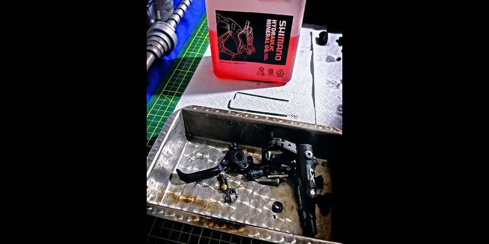

[ PROTOCOL 101.3 — HYDRAULIC TRANSMISSION ]A hydraulic brake system operates under Pascal's Law.
P = F / A
Pressure applied at the lever must be transmitted fully to the caliper.
If air exists in the system, transmission efficiency drops and the lever feels spongy.
Liquids are nearly incompressible.
Air is not.
β = - V (dP/dV)
The fluid bulk modulus (β) is high.
Air's bulk modulus is low.
Brake bleeding removes compressible volumes that alter system response.
This is not fluid replacement.
It is hydraulic restoration.
Bleeding without inspection is a technical mistake.
A system may lose efficiency even without air.
If there are:
Pressure will not translate into effective braking force.
Ff = μN
Braking force depends on friction and real applied pressure.
If the caliper does not apply uniform force, braking performance drops.
Every brake bleed includes structural inspection of lever and caliper.
Without proper diagnosis, repeated bleeding is ineffective.
If you are looking for professional hydraulic brake bleeding in Trujillo, we apply full hydraulic protocol with structural inspection.
If you are outside Trujillo, you can ship your system or bicycle to us.
The standard holds.
Calle Paraguay 300 – Urb. El Recreo – Trujillo
Industrial, Scientific & Aesthetic Noir
BOOK APPOINTMENT - BRAKE BLEED